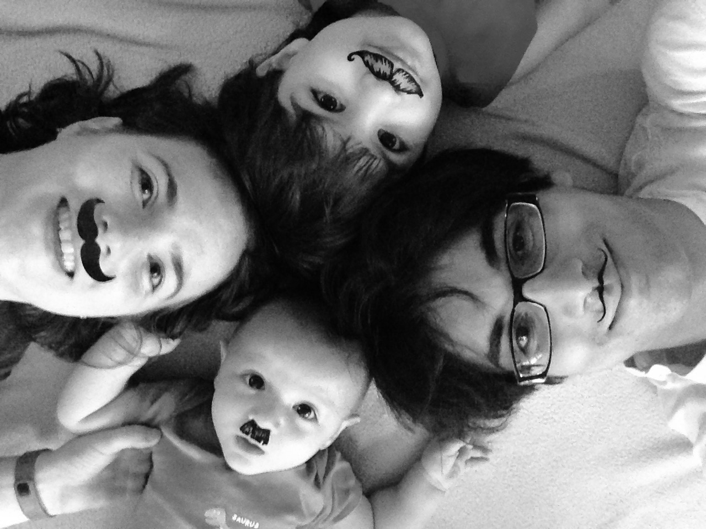

Aldebrn.me・code & math, languages & maps
Ahmed Fasih
Projects
I’ve only recently prioritized the “finishing”See the pellucid Michael Fogus’ “The 100:10:1 method” of projects. Snapshots of micro-projects in various states of undress are posted on Twitter and, for the brave, GitHub.

Cartography
Texture-shaded terrain globes in your browser

The Aldebaran family, incognita. Circa July 2015. Clockwise from right: Ahmed, Alistair, Emily, and Basile.
About
After enjoying programming and Unixing for years, I discovered applied math in mid-undergrad and decided it would be harder and therefore more interesting than “just” software engineering. I have since revised my views, but I’ve been able to combine both sets of interests in industry and, before that, grad school (terminal ABD in electrical engineering at Ohio State).
Past projects include designing new signal processing algorithms, then implementing them in C++ for CPUs or in CUDA for GPUs; managing the machine learning engine for a camera–radar system; and an app to help test pilots fly accurate tracks in tandem with other aircraft.
Right now I find myself slinging boatloads of JavaScript and doing copious signal processing. And when not applying math or writing code, I enjoy studying Japanese, Chinese, and many other of this world’s languages and literatures.
Location
IRL: Dayton, Ohio, USA.
Online: